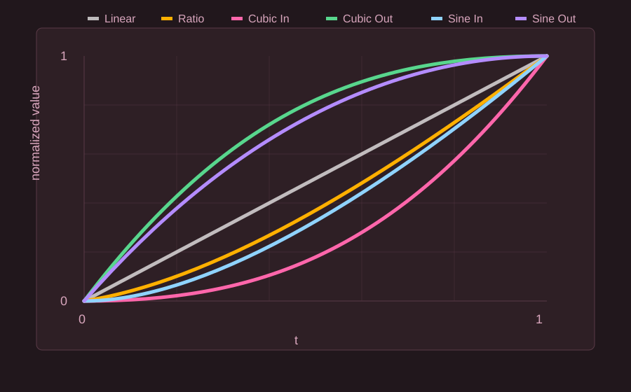

機能の説明
- 譜面:
.osuファイルを選択、またはドラッグ&ドロップします。 - 開始地点 / 終了地点: 編集範囲の時刻、SV、音量を入力します。
- 開始地点を含む / 終了地点を含む: 範囲の端にちょうどあるタイミングポイントを対象に含めるかを指定します。
- 上書き: 選択範囲内の緑線をすべて削除してから、新しい緑線を作成します。
- 修正: 選択範囲内にある既存の緑線を修正します。
- 削除: 選択範囲内にある緑線を削除します。
- 維持: 入力値を使わず、元の緑線のSVまたは音量を維持します。
- Dense モード: 選択した間隔で緑線を密に作成します。間隔は
1/16 snap、1/8 snap、1/4 snapから選択できます。 - -1/16 Offset モード: 生成するSV線を対象の少し前に置きます。三連系のノーツでは自動的に
-1/12 snapが使われる場合があります。 - SVモード: 開始値から終了値まで、SVや音量をどのカーブで変化させるかを選びます。
- バックアップ: 適用前にバックアップを作成します。
- 言語 / 説明書: UIは日本語と英語を切り替えられます。前回の言語設定は次回起動時にも引き継がれ、上部の説明書リンクからこのページを開けます。
詳細モード
詳細モードではプロファイル機能を使えます。プロファイルには現在の入力値とオプションを保存でき、同じSV設定をあとから再利用できます。
- 保存: 現在の値を名前付きプロファイルとして保存します。
- 読込: 保存済みプロファイルを読み込みます。
- 削除: 保存済みプロファイルを削除します。
- プロファイルには、編集値、範囲オプション、Dense モードの間隔、-1/16 Offset モード、SVモード、維持設定、バックアップ設定が含まれます。
plusで追加した内容
修正と削除は緑線のみを対象にします。赤線は変更されません。上書きは本当の上書きとして動作します。選択範囲内の緑線をすべて削除してから、新しい緑線を作成します。赤線は変更されません。- 通常の上書きでは、小節線上にもSV線を作成します。小節線は赤線の
beatLength * meterから計算し、最終的な時刻は小数点以下を切り捨てます。 - Dense モードは
1/16 snap、1/8 snap、1/4 snapに対応しています。 -1/16 Offset モードには、三連系ノーツ向けの自動-1/12 snap処理が含まれます。それ以外のノーツと小節線は-1/16 snapを使います。- Kiai オプションを削除しました。上書きでは開始地点のKiai/effectsを継承し、修正では各緑線の元のeffectsを維持します。
- SVと音量を個別に維持できる小さな
維持チェックボックスを追加しました。 - 音量の入力範囲を
5から100に制限しました。 - 旧 Exponential チェックボックスを
SVモードプルダウンに置き換えました。 - 日本語と英語のUIに対応し、選択した言語は次回起動時にも維持されます。
- アプリ上部に説明書リンクを追加しました。
- GitHub Releases を最大24時間に1回確認し、新しいバージョンがある場合にお知らせします。
SVモードの数式
進行度を次のように定義します。
s を開始値、e を終了値とします。通常の定義域は次の通りです。

| モード | 数式 | 変化の特徴 |
|---|---|---|
| Linear / 等差 | 時間に対して一定の差で変化します。 | |
| Ratio / 等比 | 時間に対して一定の比率で変化します。 | |
| Cubic In / 加速カーブ | 序盤はゆっくり、終盤で速く変化します。 | |
| Cubic Out / 減速カーブ | 序盤で速く、終盤はゆっくり変化します。 | |
| Sine In / 加速カーブ | サインカーブでなめらかに加速します。 | |
| Sine Out / 減速カーブ | サインカーブでなめらかに減速します。 |
Slider Velocity では、最終的な緑線の beatLength は次のように計算されます。
音量では、カーブで計算した値を最終的に四捨五入します。